<!doctype html>
<html lang="en">
<head>
<meta charset="utf-8">
<meta name="viewport" content="width=device-width, initial-scale=1">
<title>think ( ) wise — June</title>
<link rel="stylesheet" href="_ds/june-portfolio-design-system-6caff167-950c-4725-9fe6-16f1996806b8/styles.css">
<link rel="stylesheet" href="case.css">
<script src="https://unpkg.com/react@18.3.1/umd/react.development.js" integrity="sha384-hD6/rw4ppMLGNu3tX5cjIb+uRZ7UkRJ6BPkLpg4hAu/6onKUg4lLsHAs9EBPT82L" crossorigin="anonymous"></script>
<script src="https://unpkg.com/react-dom@18.3.1/umd/react-dom.development.js" integrity="sha384-u6aeetuaXnQ38mYT8rp6sbXaQe3NL9t+IBXmnYxwkUI2Hw4bsp2Wvmx4yRQF1uAm" crossorigin="anonymous"></script>
<script src="https://unpkg.com/@babel/standalone@7.29.0/babel.min.js" integrity="sha384-m08KidiNqLdpJqLq95G/LEi8Qvjl/xUYll3QILypMoQ65QorJ9Lvtp2RXYGBFj1y" crossorigin="anonymous"></script>
<script src="_ds/june-portfolio-design-system-6caff167-950c-4725-9fe6-16f1996806b8/_ds_bundle.js"></script>
<script src="image-slot.js"></script>
</head>
<body>
<div id="root"></div>
<script type="text/babel" src="case-kit.jsx"></script>
<script type="text/babel">
const hero = {
  eyebrow: 'UCD Smurfit · Student Advert Competition 2026',
  title: 'think ( ) wise',
  desc: 'An institutional brand campaign video for UCD Smurfit, built on the concept "think ( ) wise" to communicate the school\'s value proposition to prospective students, all within a two-minute limit and without generative AI.',
  ownedNote: 'As team lead I directed the film end to end. I developed the concept, an open bracket that each scene fills with a different side of the Smurfit experience, from perspective to approach to career, then carried it through storytelling, filming and the final edit so the idea stayed intact from the first sketch to the final cut.',
  flip: true,
  extra: <window.JunePortfolioDesignSystem_6caff1.TextLink href="#film" weight={500}>See the film →</window.JunePortfolioDesignSystem_6caff1.TextLink>,
  media: <div style={{ display: 'grid', gridTemplateColumns: 'repeat(3,minmax(0,1fr))', gap: 'var(--space-4)', }}>
    <Photo id="tw-hero-1" src="uploads/pasted-1788208602840-0.png" ratio="9/16" tilt={-2.5} tape={1} onRed placeholder="Drop a vertical film still" />
    <Photo id="tw-hero-2" src="uploads/pasted-1788209067470-0.png" ratio="9/16" tilt={2} tape={0} onRed placeholder="Drop a second vertical still" style={{ marginTop: 'var(--space-6)' }} />
    <div style={{ position: 'relative' }}><Photo id="tw-hero-3" src="uploads/tw-hero-3.png" ratio="9/16" tape={2} onRed placeholder="Drop a third vertical still" /></div>
  </div>,
};
function App() {
  return <CasePage nav="Personal project 03" hero={hero}>
    <CaseSection num="01" id="tw-challenge" title="The Challenge">
      <P lead>The brief asked for a marketing communications video that would persuade overseas students that UCD Smurfit offers not only a leading-edge business education but a genuine expansion of their creative potential, that studying there would let them <strong>"Think Otherwise"</strong>.</P>
      <Group label="Constraints"><Cols n={3}>
        <Item title="School, not scenery"><Sm>Focus on the School and student experience, not a tourism ad for Ireland</Sm></Item>
        <Item title="Under 2 minutes"><Sm>With under 30 seconds encouraged for channels like TikTok</Sm></Item>
        <Item title="No generative AI"><Sm>Every frame had to be shot and edited by the team, per competition rules</Sm></Item>
      </Cols></Group>
    </CaseSection>
    <div style={{ height: 'var(--space-6)' }}></div>
    <Band>
    <CaseSection num="02" id="film" title={<>Concept<br />&amp; Video</>}>
      <div className="cs-tw-narr" style={{ display: 'grid', gridTemplateColumns: 'minmax(0,1.4fr) minmax(0,1fr)', gap: 'var(--space-6)', alignItems: 'stretch' }}>
        <div style={{ display: 'flex', flexDirection: 'column', justifyContent: 'space-between', gap: 'var(--space-5)' }}>
        <div className="cs-group"><p className="cs-quote" style={{ color: 'var(--color-primary)' }}>think ( ) wise</p><span style={{ fontSize: 15 }}>No limit. Endless possibility at Smurfit School</span><p className="cs-p" style={{ margin: 'var(--space-3) 0 0' }}>The idea came from one small piece of everyday English: the suffix <strong>-wise</strong>. It reframes the angle you look at something from: <em>perspective-wise, approach-wise and career-wise</em>. Put a blank in front of it and the competition theme fits inside your own sentence: <strong>think ( ) wise</strong>. We aimed to show the unlimited possibilities of the Smurfit experience.</p></div>
        <Group label="Narrative structure">
          <div style={{ display: 'flex', flexDirection: 'column', gap: 'var(--space-3)' }}>
          <Note plain tilt={-0.8} tape={0}><Item title="01 Perspective-wise"><Sm><strong>Used to be</strong> seeing things one way, studying alone</Sm><Sm><strong>Become</strong> seeing through others’ eyes: group debate and collaboration</Sm></Item></Note>
          <Note plain tilt={0.7} tape={2}><Item title="02 Approach-wise"><Sm><strong>Used to be</strong> linear, narrow thinking</Sm><Sm><strong>Become</strong> layered and reframed: mind maps, sticky notes, library resources</Sm></Item></Note>
          <Note plain tilt={-0.5} tape={4}><Item title="03 Career-wise"><Sm><strong>Used to be</strong> feeling lost, passively scrolling job sites</Sm><Sm><strong>Become</strong> actively engaging: career services, GradIreland, job fairs</Sm></Item></Note>
          </div>
        </Group>
        </div>
        <VideoSlot youtube="dDukcqExlDM" />
      </div>
    </CaseSection>
    </Band>
    <CaseSection num="03" id="tw-production" title="Production">
      <P lead>As team lead I directed the shot list and storyboard, mapping each "-wise" segment to specific on-campus footage (library, classroom debates, the career centre, campus walks), then coordinated filming logistics and led the edit, assembling the segmented structure into a single coherent cut inside the two-minute limit, entirely without generative AI tools.</P>
      <Cols n={3}>
        <Item title="Storyboard before shoot"><Sm>Planned the storyboard and scouted locations around the school</Sm></Item>
        <Item title="Filming logistics"><Sm>Scheduling cast, crew and campus access around a live teaching term</Sm></Item>
        <Item title="Edit"><Sm>Cutting the before-and-after pairs so the structure reads without narration<br /></Sm></Item>
      </Cols>
      <div style={{ display: 'grid', gridTemplateColumns: 'repeat(4,minmax(0,1fr))', gap: 'var(--space-4)', marginTop: 'var(--space-4)' }}>
        <Photo id="tw-board-2" src="uploads/tw-board-2.png" ratio="16/9" tilt={-2} tape={0} placeholder="Storyboard 1" style={{ transform: 'rotate(-2deg)' }} />
        <Photo id="tw-board-3" src="uploads/tw-board-3.png" ratio="16/9" tilt={1.5} tape={1} placeholder="Storyboard 2" style={{ marginTop: 18, transform: 'rotate(1.5deg)' }} />
        <Photo id="tw-board-4" src="uploads/tw-board-4.png" ratio="16/9" tilt={-1} tape={2} placeholder="Storyboard 3" style={{ marginTop: 6, transform: 'rotate(-1deg)' }} />
        <Photo id="tw-board-5" src="uploads/tw-board-5.png" ratio="16/9" tilt={2} tape={3} placeholder="Storyboard 4" style={{ marginTop: 22, transform: 'rotate(2deg)' }} />
      </div>
    </CaseSection>
  </CasePage>;
}
ReactDOM.createRoot(document.getElementById('root')).render(<App />);
</script>
</body>
</html>
